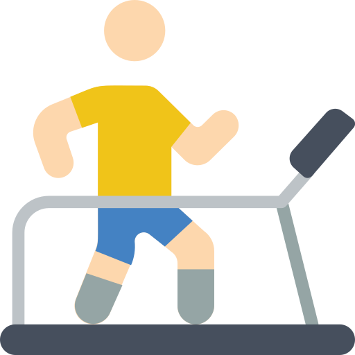
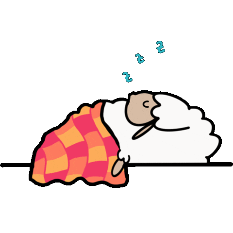
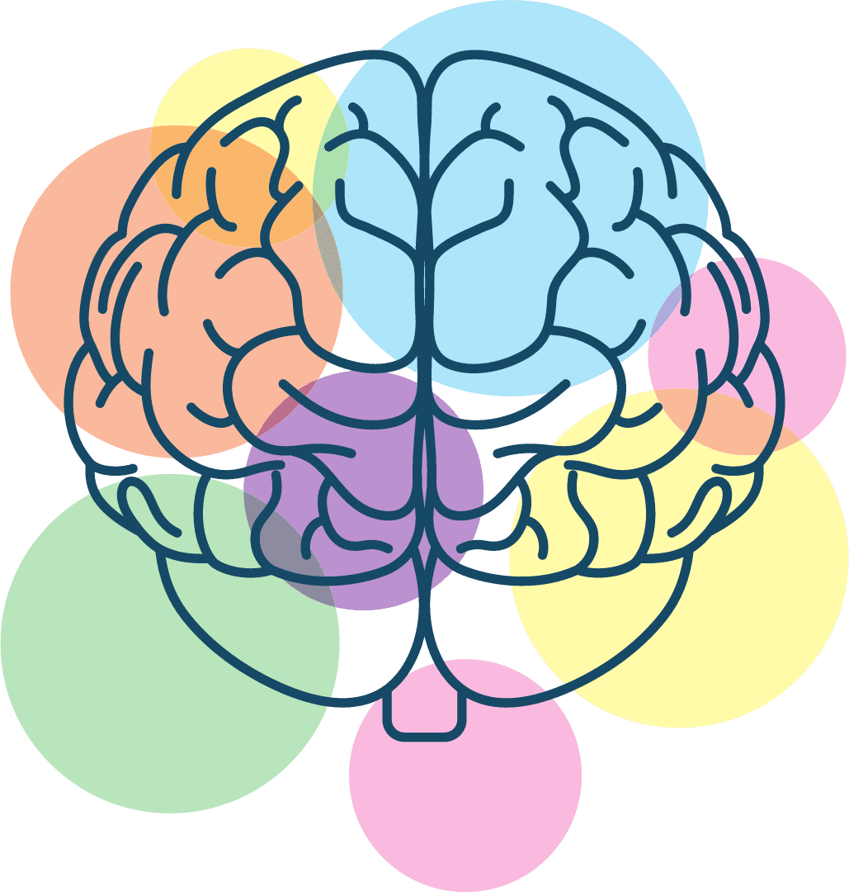

Alimentacion Economica
Mantener una alimentación saludable no depende únicamente del presupuesto disponible, sino también de la planificación y la selección adecuada de alimentos. En muchas ocasiones, productos locales, de temporada y poco procesados ofrecen un alto valor nutricional a un costo menor que los alimentos ultraprocesados. Una alimentación económica debe incluir alimentos de todos los grupos nutricionales: frutas, verduras, cereales, leguminosas y fuentes de proteína.
La combinación adecuada de estos alimentos permite cubrir las necesidades energéticas y nutricionales del organismo sin generar gastos excesivos. Además de beneficiar la salud, planificar los menús semanales ayuda a reducir el desperdicio de alimentos y optimizar los recursos económicos familiares.
También es importante controlar las porciones y evitar el consumo excesivo de azúcares, grasas saturadas y sodio, ya que estos pueden contribuir a problemas como la obesidad, diabetes o hipertensión. La hidratación es clave: se recomienda beber al menos 2 litros de agua al día.
Adoptar hábitos alimenticios saludables desde temprana edad contribuye a tener un estilo de vida activo, energético y productivo. Planificar las comidas y preferir alimentos frescos en lugar de ultraprocesados son pasos efectivos hacia una mejor nutrición.
A CONTINUACION UNA TABLA DE ALIMENTOS SALUDABLES Y SUS PRINCIPALES BENEFICIOS
| Alimento | Beneficio Principal |
|---|---|
| Frijoles | Proteína vegetal y fibra |
| Lentejas | Hierro, proteína y fibra |
| Huevo | Proteína de alta calidad |
| Plátano | Potasio y carbohidratos |
| Zanahoria | Energía y fibra |
| Tortilla de maíz | Energía y calcio | Calabaza | Vitaminas y minerales |
| Atún en agua | Proteína y omega-3 |
| Papa | Energía y potasio |
🏃 Ejercicio Físico
El ejercicio físico regular es uno de los pilares de un estilo de vida saludable. Ayuda a fortalecer músculos y huesos, mejora la circulación y el funcionamiento del corazón, y reduce el riesgo de muchas enfermedades crónicas.
Realizar actividad física de forma constante también tiene beneficios mentales. El ejercicio libera endorfinas, conocidas como las hormonas de la felicidad, que ayudan a reducir el estrés, la ansiedad y mejorar el estado de ánimo general.
Existen diferentes tipos de ejercicio: cardiovascular (como correr o andar en bicicleta), de fuerza (levantamiento de pesas o ejercicios con el propio peso) y de flexibilidad (como yoga o estiramientos). Lo ideal es combinar varias de estas formas.
Lo importante es encontrar una actividad que disfrutes para mantener la constancia. Incluso pequeñas acciones como caminar al trabajo o usar las escaleras pueden marcar una gran diferencia si se hacen a diario.
- 30 minutos diarios de actividad física
- Caminar, correr o bailar
- Ayuda a reducir el estrés

| Tipo de Ejercicio | Duración recomendada | Frecuencia |
|---|---|---|
| Caminar | 30 min | Todos los días |
| Bailar | 45 min | 3-4 veces por semana |
| Yoga | 20-30 min | 2-3 veces por semana |
😴 Descanso y Sueño
El descanso adecuado es esencial para la recuperación física y mental del cuerpo. Dormir entre 7 y 9 horas diarias ayuda a consolidar la memoria, regular el estado de ánimo y fortalecer el sistema inmunológico.
La falta de sueño puede provocar problemas de concentración, irritabilidad y menor rendimiento escolar o laboral. Es importante mantener una rutina de sueño constante, incluso los fines de semana, para mantener el equilibrio del reloj biológico.
Evitar pantallas electrónicas antes de dormir, reducir el consumo de cafeína en la tarde y procurar un ambiente oscuro y silencioso en la habitación son acciones clave para mejorar la calidad del sueño.
Descansar bien te ayuda a rendir mejor en tus actividades diarias, a mantener un sistema inmunológico fuerte y a tener un estado de ánimo más positivo y estable.
- Dormir entre 7 y 9 horas
- Evitar pantallas antes de dormir
- Seguir una rutina constante

| Hábito | Recomendación |
|---|---|
| Horas de sueño | Entre 7 y 9 horas |
| Ambiente | Oscuro, ventilado y silencioso |
| Rutina | Acostarse y levantarse a la misma hora |
🧘 Bienestar Mental
El bienestar mental es un estado de equilibrio emocional y psicológico que nos permite enfrentar los desafíos cotidianos, mantener relaciones saludables y tomar decisiones acertadas. Cuidar nuestra mente es tan importante como cuidar nuestro cuerpo.
Una buena salud mental no significa estar feliz todo el tiempo, sino saber cómo gestionar las emociones, reconocer cuando necesitamos apoyo y aplicar estrategias para reducir el estrés, la ansiedad o la tristeza. Las emociones forman parte de la vida y saber expresarlas adecuadamente es clave.
Existen muchas formas sencillas de cuidar tu salud emocional: hablar con alguien de confianza, hacer actividades creativas, establecer límites en redes sociales, meditar unos minutos al día, o simplemente darte permiso para descansar y desconectarte.
Si alguna vez sientes que no puedes con lo que estás viviendo, recuerda que pedir ayuda no es una debilidad, sino un acto de valentía. Hablar con un adulto, un orientador o un profesional puede ayudarte a sentirte mejor y a encontrar soluciones.
- Practicar la gratitud
- Meditar o respirar profundo
- Pedir ayuda si se necesita

📷 Comparte tu Estilo de Vida Saludable
📚 Recursos Adicionales
Subproductos de las UAC
Como parte de las actividades de la Unidad de Aprendizaje Curricular (UAC) de Conciencia Histórica, se elaboró un trabajo titulado "Los Mayas y su cultura", que explora la profunda relación entre la alimentación y la cultura maya. A través de esta investigación se destaca cómo su dieta reflejaba no solo su salud comunitaria, sino también su cosmovisión, sus rituales y su legado cultural. La comida maya era mucho más que sustento: representaba vida, sabiduría colectiva y un vínculo espiritual con la naturaleza y los dioses.
Este subproducto invita a reflexionar sobre la importancia de rescatar la sabiduría ancestral de los pueblos originarios y valorar nuestras raíces culturales. Además, inspira a cuidar la salud mediante una alimentación consciente y respetuosa con el entorno, reconociendo la vigencia y riqueza del legado maya.
Ver trabajo sobre los Mayas y su cultura (UAC Conciencia Histórica)Como parte de las actividades de la Unidad de Aprendizaje Curricular (UAC) de Lengua Extranjera Inglés, se elaboró un lapbook interactivo que integra oraciones en Zero y First Conditional relacionadas con los hábitos saludables. Este material busca reforzar el aprendizaje del idioma inglés al tiempo que promueve la reflexión sobre la importancia de tener una buena alimentación, hacer ejercicio y cuidar la salud.
Este subproducto combina creatividad, diseño y práctica del idioma, permitiendo a los estudiantes visualizar de forma sencilla y dinámica cómo utilizar las estructuras gramaticales en situaciones cotidianas vinculadas al bienestar personal.
Ver lapbook de hábitos saludables en inglés (UAC Lengua Extranjera)En esta actividad elaboramos un platillo como parte de la UAC de Reacciones Químicas. En el siguiente enlace puedes consultar la receta y la tabla nutricional completa:
Ver Receta y Tabla NutricionalComo parte de las actividades realizadas en la Unidad de Aprendizaje Curricular (UAC) de Ciencias Sociales, se elaboró una tabla descriptiva enfocada en el fomento del cuidado del medio ambiente. Este subproducto tiene como propósito concientizar sobre la importancia de adoptar prácticas responsables desde el entorno inmediato del estudiante. La tabla presenta una serie de acciones concretas, como el ahorro del agua, la separación de residuos, el reciclaje, el uso racional de la energía eléctrica, y la participación en campañas ecológicas. Además, se incluye una columna con propuestas sencillas sobre cómo implementar cada acción en la vida diaria, permitiendo una reflexión crítica sobre el impacto de nuestros hábitos. Este recurso refuerza los contenidos vistos en clase y fomenta la construcción de ciudadanía responsable y comprometida con el entorno.
Ver tabla descriptiva sobre acciones para el cuidado del medio ambienteComo parte de las actividades de la Unidad de Aprendizaje Curricular (UAC) de Algoritmos y Programación, se elaboró un recurso digital para difundir información sobre hábitos saludables. Este subproducto integra los conocimientos del submódulo de Programación Web y demuestra cómo la tecnología puede ser una herramienta útil para promover el bienestar personal y social.
Ver presentación sobre hábitos saludables (UAC Algoritmos y Programación)Como parte de las actividades de la Unidad de Aprendizaje Curricular (UAC) de Pensamiento Literario, se elaboró un cuento que promueve la importancia de los hábitos saludables a través de una historia personal y reflexiva. Este subproducto busca generar conciencia, especialmente entre los jóvenes, sobre cómo la alimentación influye directamente en nuestro bienestar y en la prevención de enfermedades, mostrando que pequeños cambios pueden transformar nuestro estilo de vida.
Leer el cuento sobre hábitos saludables (UAC Pensamiento Literario)🎥 Video:
🤖 Chatbot de Hábitos Saludables
🤖 Este chatbot proporciona respuestas sencillas a preguntas comunes sobre distintos temas de salud y bienestar. Si no encuentras la información que buscas, te invitamos a revisar las demás secciones de nuestra página, donde encontrarás contenido más completo y recursos adicionales.